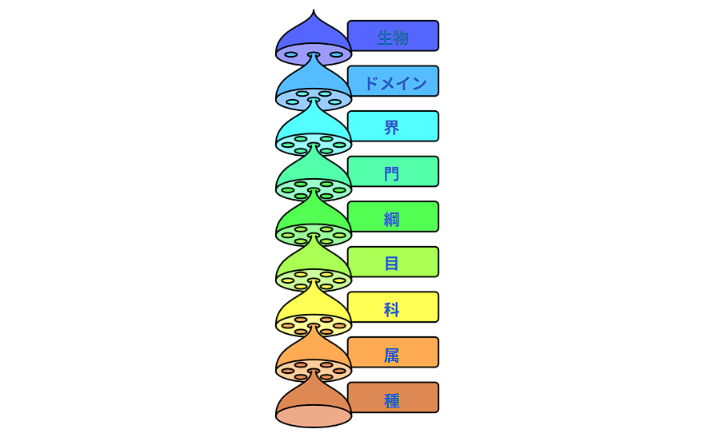
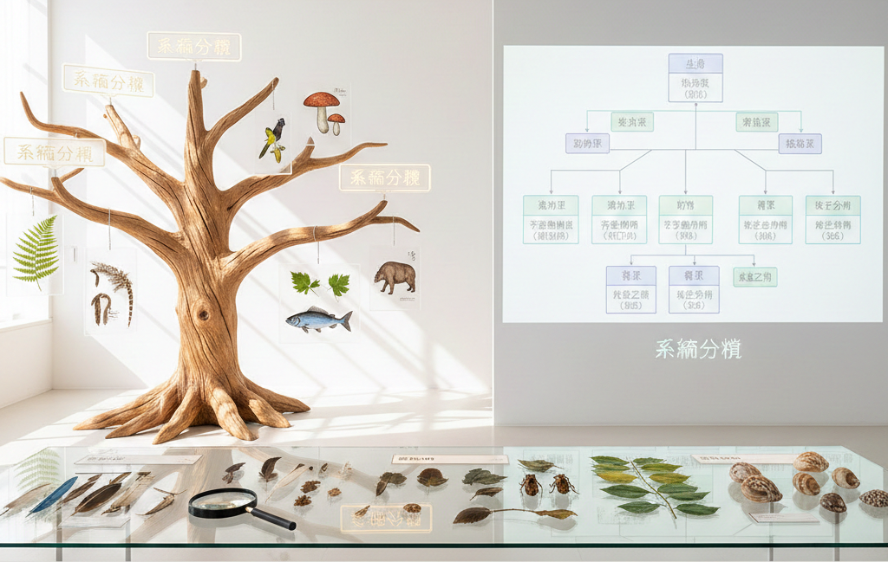
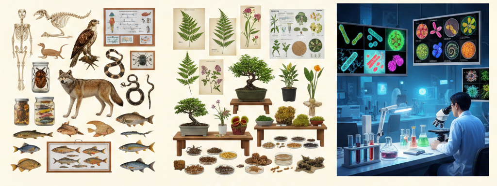
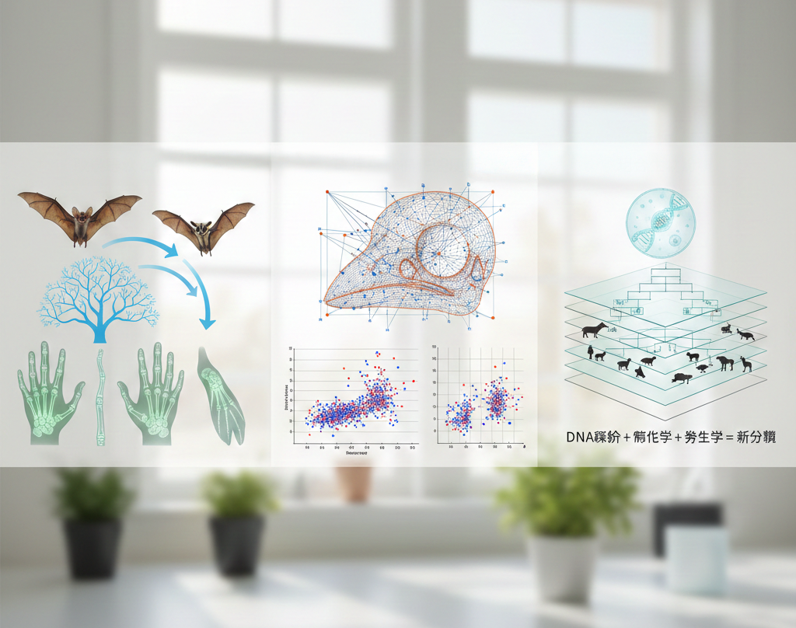

▼目次
生物を分類する際の各単位を分類群（Taxon, 複数形：Taxa）と呼ぶ。分類群は、共通の特性（形質）を共有する実体として定義され、リンネ式階層構造の中に配置される。 
標準的な階層は、上位から以下の8階層である。
ドメイン（Domain）／
界（Kingdom）／
門（Phylum/Division）／
綱（Class）／
目（Order）／
科（Family）／
属（Genus）／
種（Species）
生物全体をどのように区分するかという分類体系（Classification System）は、科学の進歩とともに劇的に変化してきた。
19世紀までは植物界と動物界の「二界説」が主流であったが、顕微鏡の発達により微生物の存在が明らかになると、ヘッケルの三界説（原生生物界の追加）、ホイッタカーの五界説（原核生物／原生生物／植物／菌／動物）へと発展した。
1970年代、カール・ウーズ（Carl Woese）は16S rRNA系統解析に基づき、それまで細菌と一括りにされていた原核生物の中に、全く異なる系統が存在することを発見した。これにより、現在の主流である3ドメイン説が確立された。
| ドメイン | 主な特徴 | 代表的な生物 |
|---|---|---|
| 細菌（Bacteria） | エステル結合脂質、ペプチドグリカン細胞壁 | 大腸菌、シアノバクテリア |
| 古細菌（Archaea） | エーテル結合脂質、独特のRNAポリメラーゼ | メタン生成菌、高度好塩菌 |
| 真核生物（Eukarya） | 核膜の保持、膜結合小器官、線状染色体 | 植物、動物、菌類、原生生物 |
現代の分類において最も重視されるのは、生物間の進化的なつながり、すなわち系統（Phylogeny）である。
系統学的妥当性を判断する際、分類群は以下の3つのいずれかに分類される。
単系統群（Monophyletic group）：ある共通祖先とその子孫のすべてを含むグループ。現代の生物分類が目指す理想の分類群。
側系統群（Paraphyletic group）：共通祖先を含むが、一部の子孫（特異的な進化を遂げた群など）を除外したグループ（例：爬虫類から鳥類を除いたもの）。
多系統群（Polyphyletic group）：異なる祖先から由来し、収斂進化によって似た形質を持つに至ったグループ。
系統の推定には、形質状態の比較やDNA配列の置換モデルが用いられる。最節約法（Maximum Parsimony）、最大尤度法（Maximum Likelihood）、ベイズ法などの統計学的手法により、最も確からしい系統樹が導き出される。
分類の基準となる「情報の扱い方」には、大きく分けて系統的なアプローチと、形態や性質の類似性に基づくアプローチがある。
形質分類（Phenetic Classification 表現論的分類：Pheneticsとも表記される）は、観察可能な表現型（形質）の類似度を数値化し、距離行列に基づいて分類する方法である。1960年代に計算機科学の発達とともに隆盛したが、収斂進化（異なる系統が似た環境で似た形質を獲得すること）による誤認を排除できないという弱点がある。
これに対し現代の進化分類や分岐は、形質を「原始的な状態（祖先形質）」と「新しく現れた状態（派生形質）」に区別する。特に特定のグループのみが共有する共有派生形質（Synapomorphy）こそが、分類群の単系統性を証明する。
分類における基本単位は「種」であるが、種の定義は生物学において今なお議論が続く。
エルンスト・マイヤーが提唱した「相互に交配可能であり、他の集団から生殖的に隔離されている集団」という定義が最も広く知られている。この隔離を成立させるプロセスが種分化である。
種分化（Speciation）は、地理的・遺伝的要因によって進行する。
異所的種分化：地理的な障壁（山脈、海など）によって集団が分断され、独自の進化を遂げる。
同所的種分化：同一地域にいながら、倍数化や選好性の変化などにより生殖隔離が生じる。
周辺的・隣接的種分化：集団の端部で特殊な適応が起こり、新種へと移行する。
種分化の過程では、遺伝的な分化が不完全な「亜種」や「変種」といった段階が存在し、亜種や変種をどのように分類体系に組み込むかは、実務的な生物分類者の手腕に委ねられる部分も大きい。
21世紀の生物分類は、ゲノム解析の低コスト化により「分子系統の網羅」という段階に達している。しかし以下の課題が残されている。
水平伝播（HGT：Horizontal Gene Transfer）の問題：特に原核生物において種を超えた遺伝子の移動が系統樹を網目状（ネットワーク）に変質させており、単純な分岐モデルの限界を露呈させている。
隠蔽種（Cryptic species）：形態的には判別不可能だが、遺伝的には明確に隔離されている種の発見が相次いでいる。
統合生物分類（Integrative Taxonomy）：分子、形態、生態、行動といった多角的なデータを統合し、より強固な生物分類的決断を下す手法が主流となりつつあるが未だ不完全ではある。
歴史的に生物分類はアリストテレスの「存在の階段」から始まり、リンネ（Carl von Linné）による二名法と階層的分類の確立を経て、ダーウィン（Charles Darwin）の進化論によって「共通祖先からの分岐」という理論根拠を得た。今日、生物分類は形態分類、細胞研究、発生研究、分子系統解析（Molecular Phylogenetics）らを取り入れ、かつてない精度で生物の類縁関係を記述している。
生物分類とは生命の多様性の中に秩序を見出す試みであり、進化という歴史的プロセスが存在する。分類群を定義し強固な分類体系を構築することは、生物学の関与するあらゆる分野（生態学／保全生物学／医学／農学など）の基盤を支えるインフラストラクチャである。
形質分類から始まった知見が系統解析という強力なツールを得て、今や種分化の動的なプロセスまでをも可視化しつつある。私たちはかつてリンネが夢見た「自然の体系の全網羅把握」を、ゲノムの精緻な設計図を通じ完成させようとしている。

動物界（Metazoa）における動物の形態分類は、単なる外見の類似ではなく、胚発生の過程で決定される「ボディプラン（基本設計図）」の比較に基づいている。現代の系統生物分類においても、分子系統樹が示す分岐順序を形態学的に解釈する際、以下の発生学的形質が極めて重要な指標となる。
動物の体制を規定する第一の指標は、体の対称性である。海綿動物のような非対称な組織化から始まり、刺胞動物に見られる放射対称（Radial symmetry）、そして大部分の多細胞動物が属する左右対称（Bilateral symmetry）へと複雑化した。左右対称動物は、頭部への神経系の集中（頭化）を伴い、能動的な運動能力の獲得と密接に関連している。
これに呼応するのが胚葉数である。刺胞動物などの二胚葉性（外胚葉・内胚葉）に対し、左右対称動物は中胚葉を獲得した三胚葉性である。三胚葉性により複雑な内臓器官や筋肉系の発達が可能となった。
中胚葉由来の空間である体腔（Coelom）の有無と形態は、かつて動物分類の最重要指標であった。無体腔／偽体腔／真体腔という段階的区分は、近年の分子系統学により必ずしも単系統を反映しないことが判明しているが、個別の分類群の生態適応を理解する上では依然として有効な形質である。
さらに決定的な分岐点として、原口が口になる前口動物（Protostomes）と、原口が肛門になり口が新たに開口する後口動物（Deuterostomes）の区分がある。この区分は卵割の様式（螺旋卵割か放射卵割か）や中胚葉の形成過程（裂体腔か原腸体腔か）といった初期発生の深部プロセスに根ざしており、動物の二大系統を分かつ形態分類の基盤となっている。
植物の形態分類は、光合成を行う多細胞真核生物という枠組みの中で、陸上環境への適応に伴う構造の複雑化と、生活環（世代交代）の変遷を軸に整理される。
植物が水圏から陸上へ進出する過程で、水と養分の輸送を担う維管束（Vascular tissue）の発達は最大の画期であった。シダ植物以降に見られる木部と師部の分化は、植物体の大型化を可能にし、根・茎・葉という栄養器官の明確な分化をもたらした。形態生物分類的には、中心柱（Stele）の構造（原生中心柱、真正中心柱など）が、初期陸上植物の系統推定において重要な形質とされる。
現代の植物分類における核心は、生殖形質の比較にある。胞子による繁殖から、乾燥に強い「種子」による繁殖への移行は、植物の分布を劇的に拡大させた。
裸子植物：胚珠が心皮に包まれず露出している。
被子植物：胚珠が心皮（子房）に包まれ、重複受精という特有のプロセスを持つ。
被子植物内部の分類においては、長らく単子葉類と双子葉類という区分が用いられてきたが、分子系統解析（APG分類体系）により、従来の「双子葉類」が側系統群であることが示され、現在は真正双子葉類（Eudicots）などの概念へと再編されている。しかし花粉の構造（一溝型か三溝型か）や花の各器官（萼／花弁／雄蕊／心皮）の配置様式といった形態的形質は、依然として系統推定の強力なエビデンスであり続けている。
顕微鏡下での観察に依存する微生物の形態分類は、光学顕微鏡から電子顕微鏡そして共焦点レーザー顕微鏡へと技術が進化するにつれ、その解像度を高めてきた。
原核生物において細胞の基本形状（球菌、桿菌、らせん菌）や、鞭毛の配置（単鞭毛、周鞭毛など）は、古典的分類の第一歩である。さらにグラム染色による細胞壁構造（ペプチドグリカン層の厚み）の違いは、系統学的な区分のみならず、抗生物質感受性などの生理学的特性とも直結している。
電子顕微鏡（TEM/SEM）を用いた細胞内封入体やS層（表面タンパク質層）の観察により、極限環境に生息する古細菌特有の形態適応も明らかになっている。
原生生物（Protists）を含む真核微生物の分類では、細胞内小器官の有無や構造が決定的な意味を持つ。
ミトコンドリアの板状・管状・円盤状といったクリステの形状は、真核生物の主要な系統（スーパーグループ）を特徴づける安定した形質である。
鞭毛の根部構造や、ハプト藻に見られるハプトネマなどの特殊な細胞器官は、複雑な細胞進化の履歴を物語る。
微生物の形態分類は、ゲノム解析によって再構築された系統樹に対しその生物が「どのような生存戦略を選択したか」という生物学的解釈を与える役割を担っている。

生物分類者が形態を扱う際、常に直面するのが相同（Homology）と相似（Analogy）の識別である。
異なる系統の生物が類似した生態的地位（ニッチ）を占めることで、独立に似通った形態を獲得する現象を収斂進化（Convergent evolution）と呼ぶ。たとえば魚類のヒレと鯨類のフリッパーや、有袋類のフクロモモンガと有胎盤類のムササビの形態的類似が収斂進化に当たる。形質分類（Phenetics）が陥りやすい罠は、これら「相似形質」を系統的近縁性と誤認することにある。
一方で分子遺伝研究の発展は「深部相同」という概念をもたらした。昆虫の複眼と脊椎動物のカメラ眼は、形態学的には明らかに独立した起源を持つ相似器官と考えられてきた。しかしその形成を制御する遺伝子（Pax6など）が共通であることが判明し、発生のツールキットレベルでは相同性が維持されていることが示された。深部相同により形態生物分類は単なる形状の比較から、遺伝子発現ネットワークの進化を読み解く「進化発生生物学（Evo-Devo）」へと統合されつつある。
従来の形態分類が、記述的・主観的指標に依存していたのに対し、現代では数理手法を用いた定量的な形態分類が主流となっている。
幾何学的形態測定（Geometric Morphometrics）は、生物体の形状を座標データ（ランドマーク）として抽出し、サイズの影響を排除して形状の純粋な変異を解析する手法である。主成分分析（PCA：Principal Component Analysis）などの多変量解析を組み合わせ、種間の微細な形態的差異を統計的に有意なものとして記述できる。
幾何学的形態測定により、従来の定性的な記載では見落とされていた隠蔽種の特定や環境要因による表現型の可塑性の分離が可能となった。
今世紀の生物分類は、分子データ至上主義を脱し、あらゆる証拠を統合する統合生物分類（Integrative Taxonomy）の時代にある。
分子系統樹が示す「遺伝的距離」と形態分類が示す「形質の飛躍」は、時に矛盾する。たとえば形態的には極めて特異な肺魚は、分子レベルでは四肢動物に最も近い。乖離を精査することで、特定の系統で起こった急速な適応放散や形態的停滞（生きた化石）のメカニズムをも浮き彫りにする。
生物分類は、生物多様性を記述する共通言語である。
ゲノム情報が氾濫する現代において、ゲノム配列が「どのような形態を持ち、どのような生態を示す生物か」という情報と結びついていなければ、生物学的知見の価値は半減してしまう。
デジタルアーカイブ化されたタイプ標本の3DスキャンデータやAI画像認識技術の導入により、リンネ以来の形態観察は、精密科学としての統合生物分類の新たなステージへと進化を遂げつつある。
